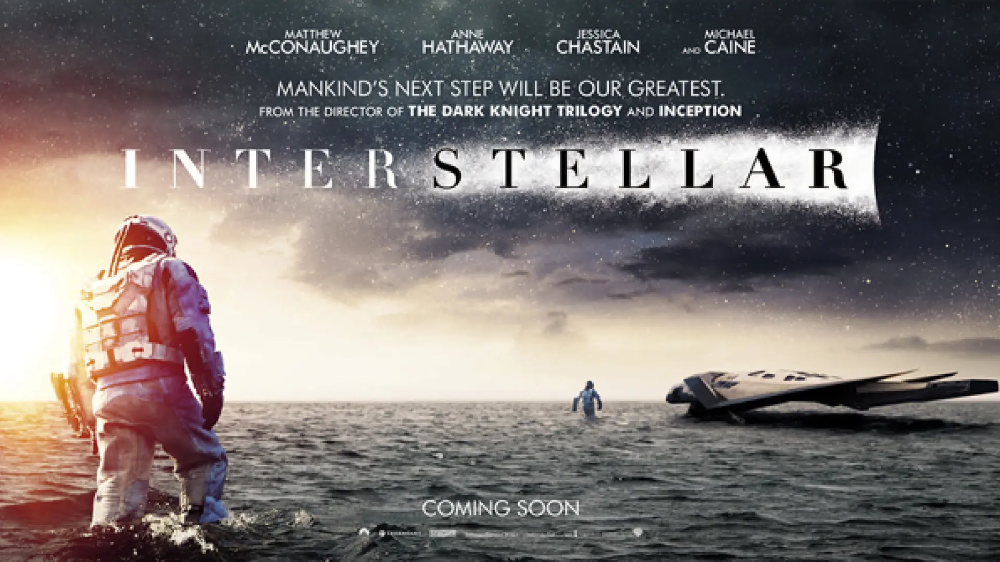

Ciencia ficción
Interstellar
Un grupo de exploradores viaja a través del espacio en busca de una nueva esperanza para la humanidad.
Cine y televisión
Utiliza las flechas para explorar una selección de películas y series reconocidas por sus historias, personajes y universos.

Ciencia ficción
Un grupo de exploradores viaja a través del espacio en busca de una nueva esperanza para la humanidad.
Puedes utilizar los botones o las flechas izquierda y derecha del teclado.